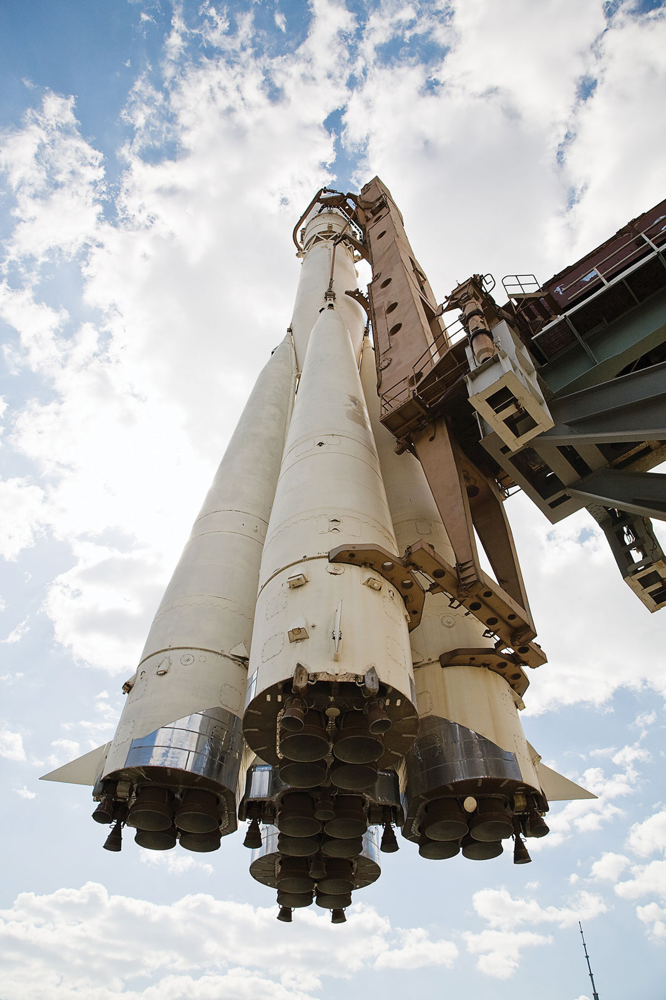
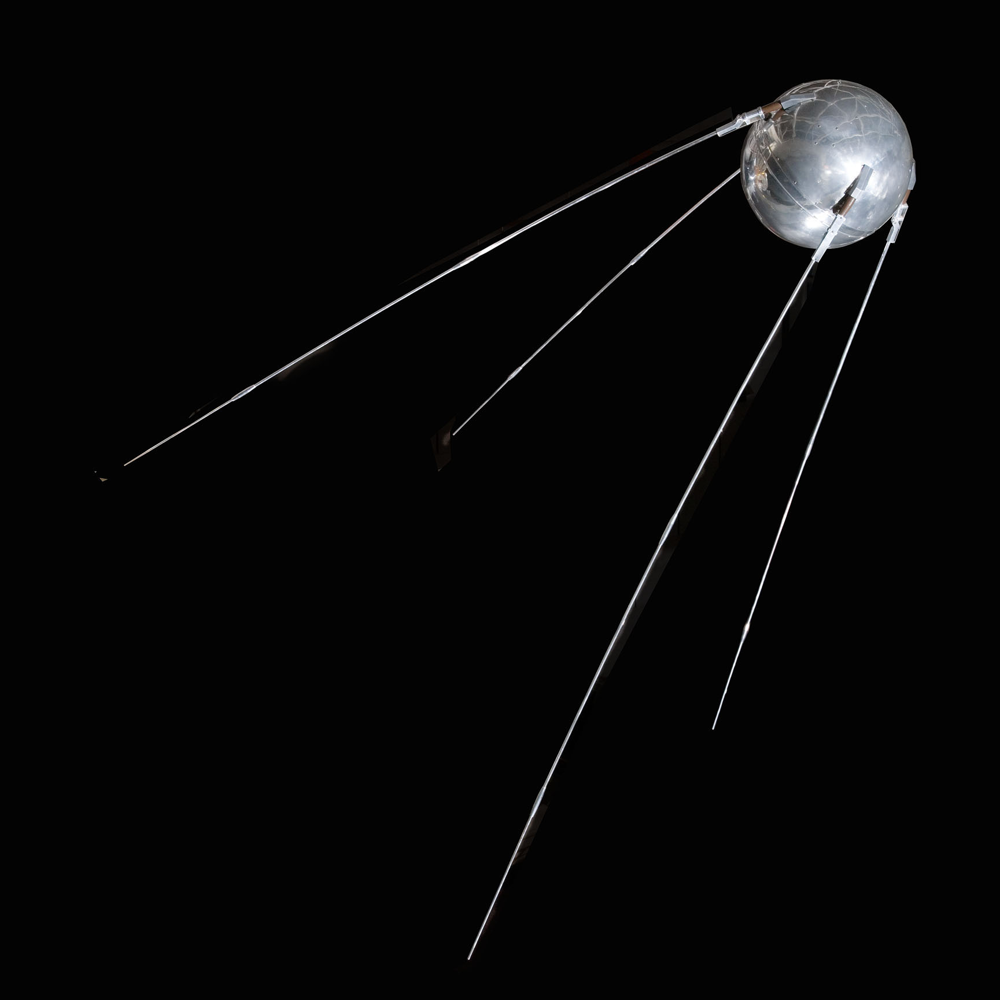

The Cold War in Space
1947 - 1991
The Cold War was a prolonged period of geopolitical and economic tension between the Capitalist United States and the former Communist Soviet Union that lasted from 1947 to 1991 due to conflicting political and economic ideals. George Keenan’s 1946 “The Long Telegram,” explaining how the Soviets and the U.S. will never reach a lasting agreement, left America to take action with containment, a defense strategy that gave way to unprecedented scientific and technological innovation that spanned the next four decades. The goal of containment was to restrict communist expansion and to keep it within its already pre-existing boundaries. This caused incredible tension between the former allies because it encouraged each to one-up the other with greater military arsenals, defense forces, and atomic bombs, which is known today as the Arms Race. On 4th Oct 1957, a Soviet R-7 Intercontinental Ballistic Missile launched Sputnik 1, the world’s first artificial earth satellite into a low elliptical earth orbit.
The launch of Sputnik 1 came as an unpleasant surprise to many Americans because space was perceived as the next palpable chapter in the rich American tale of exploration and with the Soviets having more advanced technology and greater scientific infrastructure, it was critical for the U.S. not to fall too far behind. With their escalating rivalry and America's fear of being overtaken, the Cold War was extended into space and resulted in the Space Race. The Space Race was considered an important part of the Cold War because the rivalry between the two countries to develop aerospace capabilities showed the world which country had the best scientific, technological, and economic support.
This kicked off and accelerated vast developmental efforts along with tremendous financial funding on both sides to launch artificial satellites and uncrewed space probes into low earth orbit and beyond, and to ultimately be the first ones to successfully land humans on the moon. The Space Race is where the realm of modern space exploration, as we know it, all began.